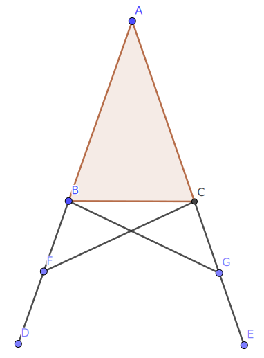
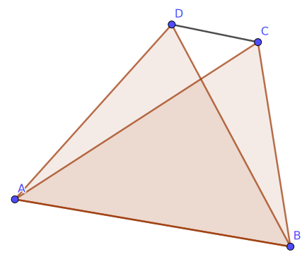

Euclid's elements, web version
This webpage follows the general scheme of Euclid's original work, while updating some of the terminology. Occasionally we might point out some of Euclid's inaccuracies, but we make no pretense to have a perfectly rigorous treatment; our main goal is ease of understanding for high school level students.
Primitive entities
Euclid defined these terms, but he never used these definitions. Therefore it's better to leave them undefined.
- Point
- Segment
- Plane
Note: we use the term "segment" instead of Euclid's "line".
Primitive relationships
These are also not explicitly declared by Euclid.
- Congruence
- Incidence
Definitions
Angle: pair of lines that contain a common point.
Right angle: angle formed by two lines that form equal angles. The lines are called perpendiculars.
Obtuse angle: an angle greater than a right angle.
Acute angle: an angle smaller than a right angle.
Circle: part of the plane contained by a circumference.
Circumference: the set of points that form congruent segments with a common point, called the center.
Rectilinear figure: part of a plane contained by segments, called sides.
Triangle: rectilinear figure with 3 sides. A triangle can be:
- Equilateral if it has 3 equal sides;
- Isosceles if it has two equal sides;
- Scalene if all the sides are different.
Quadrilateral: a rectilinear figure with 4 sides. Among these, we define:
- a square has all right angles and congruent sides;
- a rectangle has all right angles but unequal sides;
- a rhombus has congruent sides, but not all right angles;
- a rhomboid or parallelogram has opposite sides and angles congruent to one another.
Parallel segments belong to the same plane but any of their extensions don't have any points in common.
Postulates
- A pair of points defines a segment.
- A segment can always be extended.
- A circle with any center and radius exists (can be drawn).
- All right angles are congruent to each other.
- If a segment crosses two other segments and the sum of two angles on the same side is less than two right angles, then there exist extensions of the two segments that meet in a point on the same side; there's no such point on the other side.
Common notions
- Congruence is a transitive relationship.
- Given two pairs of congruent things, the sums across the pairs are congruent to each other.
- Given two pairs of congruent things, the differences across pairs are equal to each other.
- Congruence is a reflexive relationship.
- The whole is greater than the part.
Propositions
Proposition 1: constructing an equilateral triangle on a given segment.

Hypothesis: a segment AB is given.
Thesis: an equilateral triangle exists that has AB as a side.
Proof:
- Construct the circle BCD with center A and radius AB (postulate 3).
- Construct the circle ACE with center B and radius BA (postulate 3).
- Postulate that circles BCD and ACE meet in a point C. Euclid skipped this step!
- Draw segments CA and CB.
- Since A is the center of circle CDB and AC and AB are it's radiuses, AC and AB are congruent (definition of circumference)
- Since B is the center of circle ACE and BC and BA are it's radiuses, BC and BA are congruent (definition of circumference)
- We know that AC ≅ AB and BC ≅ BA; but AB ≅ BA (common notion 4), therefore by common notion 1 we know that all three segments are congruent.
- Therefore, the triangle ABC is equilateral. QED
Proposition 2: construct a segment equal to another segment, using a given point as an extreme.
Hypothesis: let A be a given point, and BC a given segment.
Thesis: there exists a straight line AD congruent to BC.
Proof:
- Construct an equilateral triangle ABC on segment AB (proposition 1).
- Extend AE and BF from segments DA and DB (postulate 2).
- Draw the circle CGH with center B and radius BC (postulate 3).
- Draw the circle GKL with center D and radius DG (postulate 3).
- As D is the center of GKL, DL is congruent to DG (definition of circumference).
- given AD ≅ BD and DL ≅ DG, we have the differences AL ≅ BG (common notion 3).
- BC and BG are radiuses of CGH; therefore they are congruent (definition of circumference)
- As AL ≅ BG and BC ≅ BG, by common notion 1 we have AL ≅ BC. QED
Proposition 3: given two unequal segments, subtract the smaller from the larger.
Hypothesis: let AB and C be two given non-congruent segments, with AB longer than C.
Thesis: it's possible to subtract a segment congruent to C from AB.
Proof:
- Using proposition 2, construct a segment AD congruent to C.
- Build the circle DEF with center A and radius AD (postulate 3).
- Postulate that AB meets the circle in a point E
- By the definition of circumference, AD ≅ AE.
- From AD ≅ AE and C ≅ AD, we conclude that AE ≅ C (common notion 1). QED
Proposition 4
If two triangles have two sides congruent to two sides and the angle between these congruent, then the third sides and the other angles will also be congruent across the triangles.
Note: Euclid's proof is not considered valid today. This proposition should be an axiom.
Proposition 5: In an isosceles triangle, the angles at the base are congruent to one another.

Hypothesis: let ABC be an isosceles triangle with side AB congruent to AC; let segment BD and CE be the extensions of AB and AC respectively (Postulate 2).
Thesis: angles ABC ≅ ACB and CBD ≅ BCE.
Proof:
- Let F be any point on BD.
- Use proposition 3 to construct AG on AE, such that AG ≅ AF.
- Draw lines FC and GB (postulate 1).
- Since AF ≅ AG and AB ≅ AC, and the common angle A ≅ A, by proposition 4 we have the triangles AFC ≅ AGB.
- Since AF ≅ AG and AB ≅ AC, by common notion 3 the differences BF ≅ CG.
- Now we know that FC ≅ GB, BF ≅ CG, and the angles BFC ≅ CGB; thus by proposition 4, the triangles BFC ≅ CGB.
- Thus, the angles FBC ≅ GCB, and BCF ≅ CBG.
- Since ABG ≅ ACF, within which CBG ≅ BCF, their differences ABC ≅ ACB (common notion 3).
- We found FBC ≅ GCB, as well as ABC ≅ ACB. QED
Proposition 6: if a triangle has two angles equal to one another, then the sides subtending the equal angles will also be equal to one another.
This is the converse of proposition 5.

Hypothesis: let ABC be a triangle with ABC ≅ ACB.
Thesis: the sides AB ≅ AC.
Proof:
- Suppose that the thesis is false (reductio ad absurdum): if AB and AC are not congruent, then one must be larger than the other (Note: here Euclid is assuming an order relationship between segments that constitutes an implicit axiom)
- Without loss of generality, assume AB > AC (if this is not the case, the points should be relabeled to make it happen).
- Construct the point D on AB such that DB ≅ AC (using proposition 3.
- Draw the segment DC (postulate 1).
- DB ≅ AC (by construction), BC ≅ CB (by common notion 4) and the angles DBC ≅ ACB. Thus by proposition 4, we have the triangles DBC ≅ ACB.
- But by common notion 5, the part cannot be greater than the whole (Euclid is a bit generic here. What does he mean exactly by part?), therefore we have arrived at a contradiction.
- Thus AB is not unequal to AC; therefore AB ≅ AC. QED
Proposition 7
Given a segment, it's not possible to build two different triangles (on the same side of the initial element) with congruent sides that will converge in a different vertex.
Note: Euclid only examines the non-trivial case where the triangles don't contain each other. When they do, common notion 5 gives an easy contradiction.

Hypothesis: let AB be the given segment; let AC ≅ AD and BC ≅ BD.
Thesis: C and D are the same point.
Proof:
- Draw segment CD (postulate 1).
- AC ≅ AD; thus by proposition 5, then angles ACD ≅ ADC.
- By common notion 5, angles ACD > DCB (if it isn't, exchange the labels).
- Putting together the previous points, we have ADC > DCB.
- Similarly, CDB > DCB.
- By definition, CB ≅ DB; therefore by proposition 5, the angles CDB ≅ DCB.
- We have proved that CDB > DCB, but also that CDB ≅ DCB. This is a contradiction!
- Therefore, it cannot be that C and D are different points. Thus, they must be the same point. QED
Proposition 8
If two triangles have all sides equal two by two, then the respective angles are equal two by two.
This is also called "third triangle congruence criterion".
Hypothesis: let ABC and DEF be two triangles such that AB ≅ DE, AC ≅ DF, BC ≅ EF.
Thesis: angles BAC ≅ EDF. (congruence can be proved for other angle pairs in the same way.)
Proof:
- On the segment EF, construct a triangle EFG that is congruent with ABC, such that G is on the same side of EF as D. (one should first prove that building such a triangle is possible.)
- By proposition 7, G must be the same point as D.
- Since G and D are the same point, by postulate 1 it must be that DE and GE coincide, as well as DF and GF.
- Therefore, by the definition of angle, the angles EGF and EDF coincide and are therefore congruent (common notion 4)
- But angles BAC ≅ EGF; therefore by common notion 1, we have BAC ≅ EDF. QED